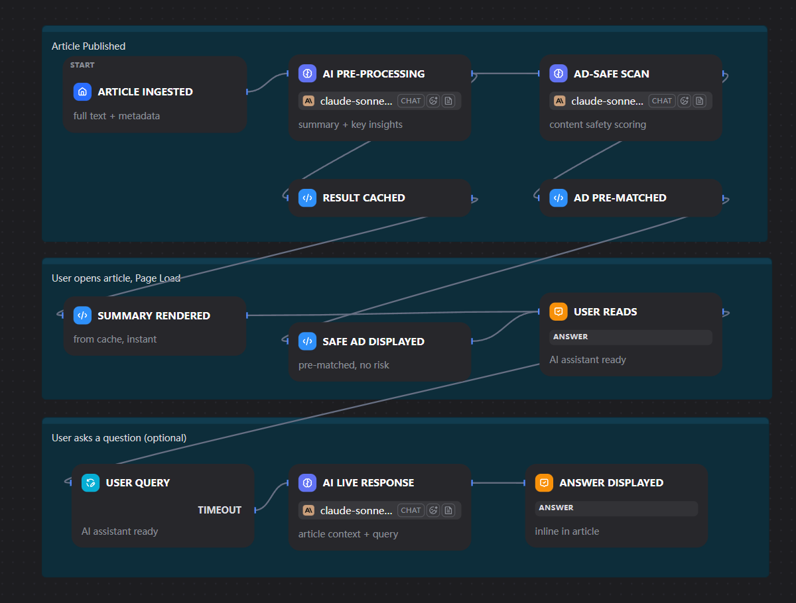

Step 01
Figma MCP
Reads the live design file and outputs layout, spacing, and token structure directly into the editor so the first pass already matches the intended composition.
From design to code: Extract design specs through Figma MCP, generate code with Cursor AI, and refine details through manual review.
Reads the live design file and outputs layout, spacing, and token structure directly into the editor so the first pass already matches the intended composition.
Uses the generated scaffold to fill in responsive behavior, interactions, and content structure through iterative prompts without leaving the code context.
Refines edge cases, validates product logic, and corrects visual drift where human judgment is still more reliable than generated output.
